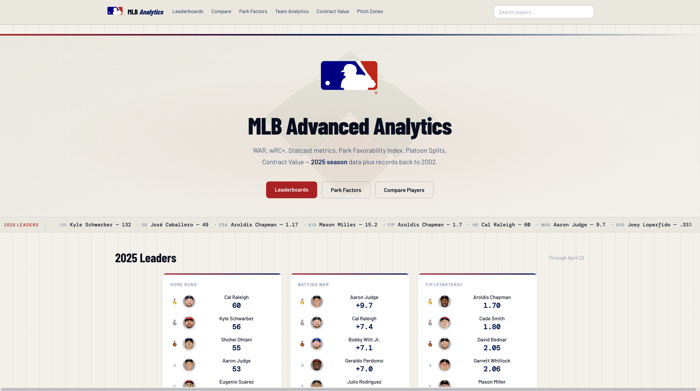
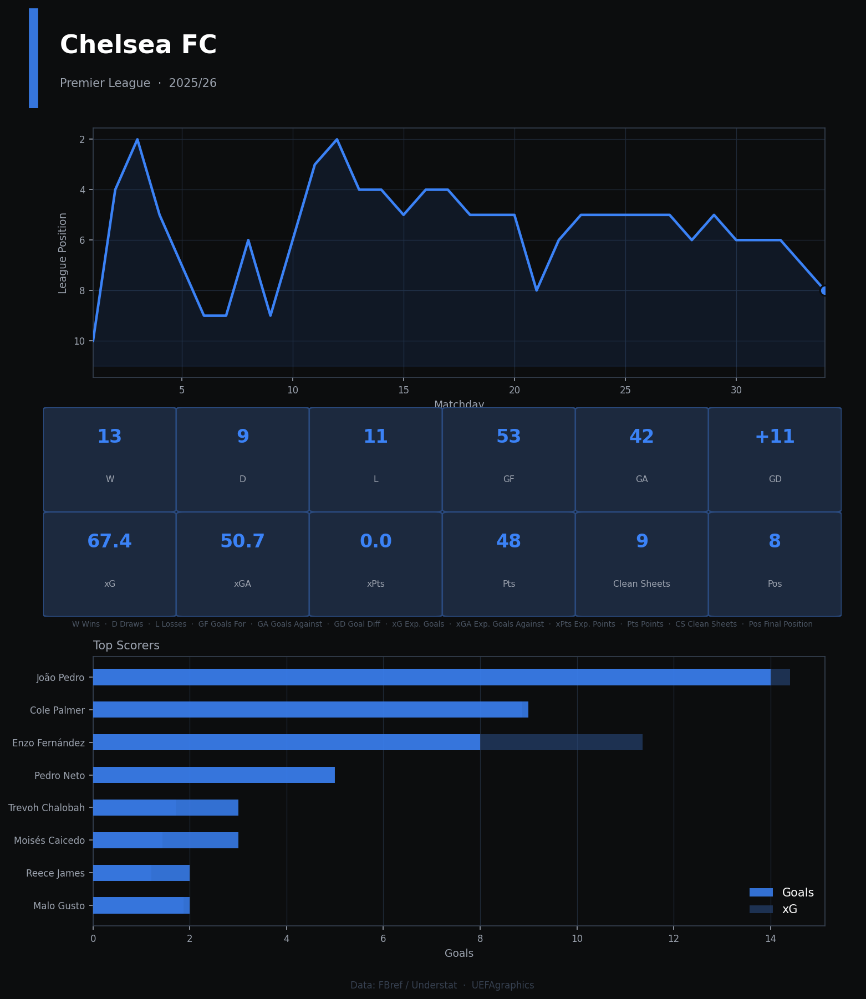
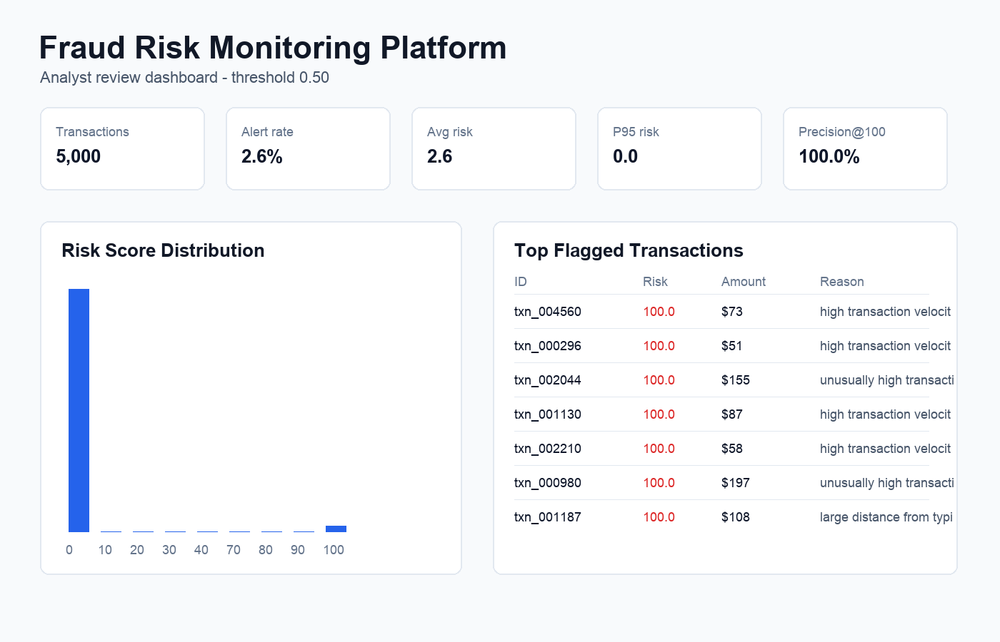
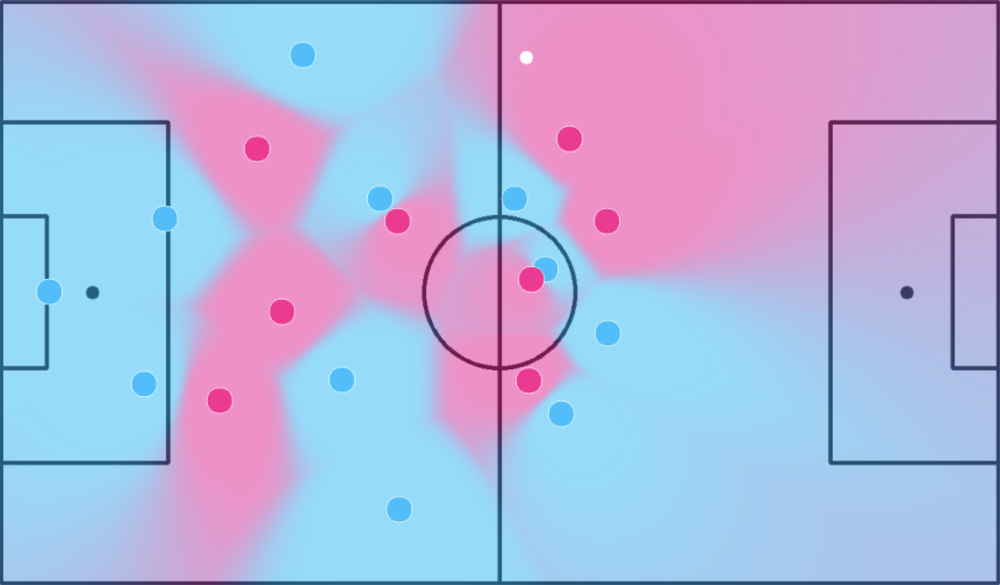
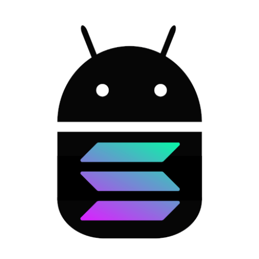
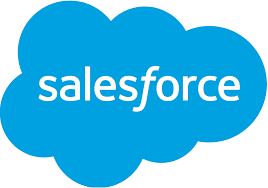
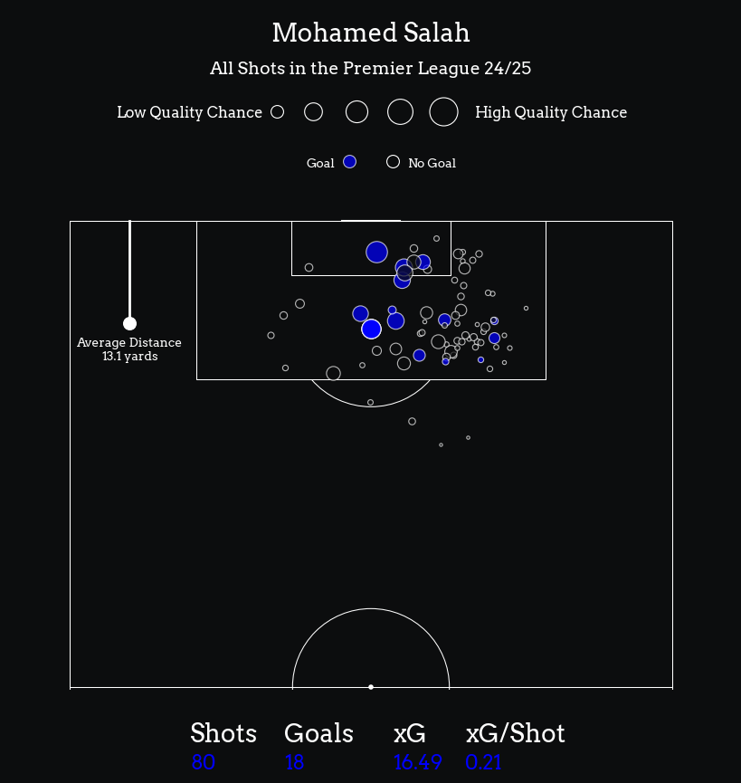

Full-stack Statcast analytics app — WAR, wRC+, Park Factors, player comparisons, and a custom PFI stat. Live on Vercel + Railway.

Full-stack football analytics app for European player, team, and league infographics.

End-to-end fraud scoring, threshold tuning, and analyst review dashboard.

Spatial soccer analytics using object detection and homography.
Personalized cooking recommendations using NLP and ML.

Modular token-discovery framework for Solana markets.
Sentiment-driven market prediction for equities and crypto assets.

End-to-end CRM analytics pipeline with Streamlit dashboard.
Probabilistic aggregation of national polling data with live UI output.

Live EPL shot-map visualization built from real-time web scraping.